Transcription du document du Drive TSSR. La mise en forme est adaptée au Web ; les compléments IA du portail sont présentés séparément.
|
• Il est important d’analyser son système d’exploitation pour vérifier
que tout fonctionne correctement. Il y a des deux types d’outils
permettant cette analyse : les outils proactifs et réactifs.
• Afin d’analyser facilement son système, il est utile de lire les
journaux du système (les logs).
• Afin de préserver un bon fonctionnement, il est utile d’automatiser
des tâches administratives.
• Enfin, il est important de connaître des commandes de prise
d’informations du système, la RAM, le CPU, les processus, etc.
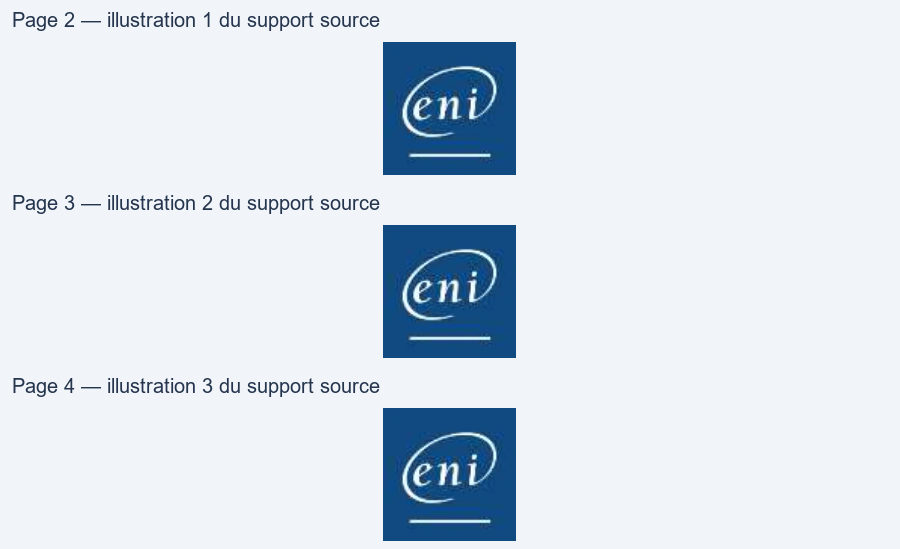
• Tous les services, programmes, tâches gérées par systemd ont leurs comportements remontés dans journald. • Le fait d’exécuter la commande systemctl status [daemon] affiche le statut du service mais aussi les logs de l’application. • Ces logs sont enregistrés dans une base de données gérée par journald.
root@deb:~$ systemctl status sshd.service
● ssh.service - OpenBSD Secure Shell server
Loaded: loaded (/lib/systemd/system/ssh.service; enabled; vendor preset: enabled)
Active: active (running) since Thu 2021-06-03 14:22:07 CEST; 6 days ago
Docs: man:sshd(8)
man:sshd_config(5)
Process: 614 ExecStartPre=/usr/sbin/sshd -t (code=exited, status=0/SUCCESS)
Main PID: 621 (sshd)
Tasks: 1 (limit: 2315)
Memory: 3.8M
CGroup: /system.slice/ssh.service
└─621 /usr/sbin/sshd -D
juin 09 15:35:20 client-linux sshd[5154]: Accepted password for jdoe from 172.19.11.13 port 61644 ssh2 juin 09 15:35:20 client-linux sshd[5154]: pam_unix(sshd:session): session opened for user jdoe by (uid=0)
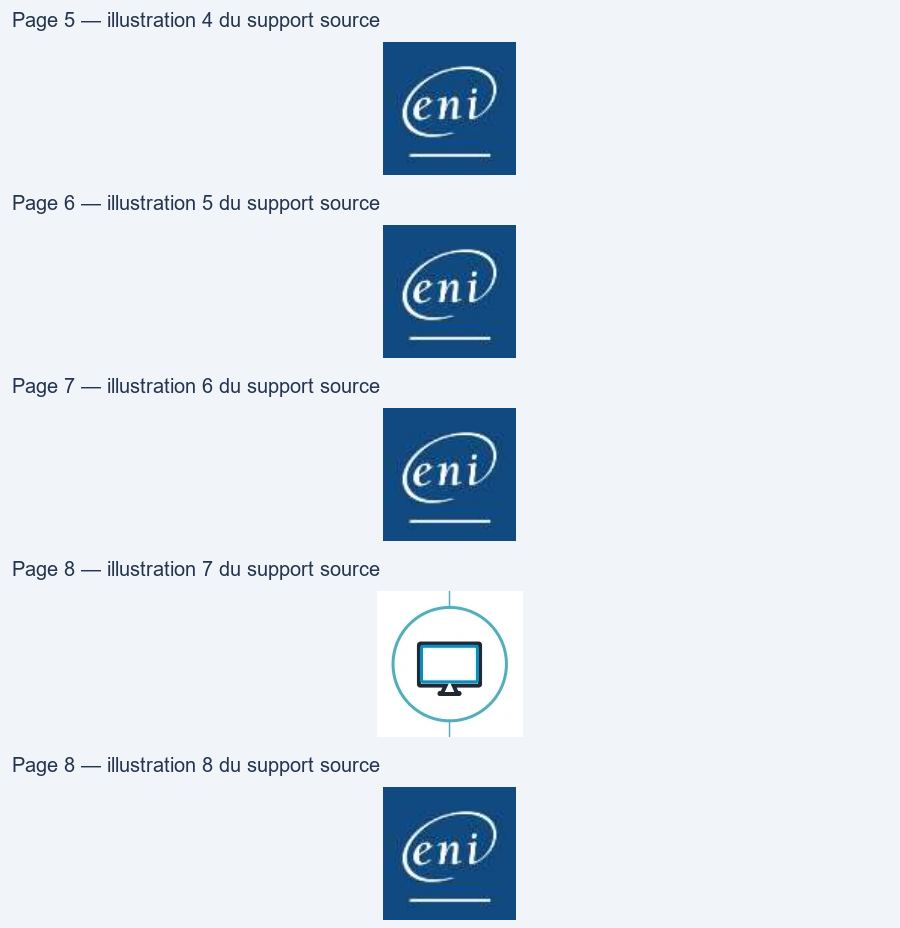
• Puisque journald stocke les informations dans une base de données, il est possible de regarder les logs complets de chaque service via la commande journalctl.
• Le fichier de configuration de journald est /etc/systemd/journald.conf
root@deb:~$ journalctl - Logs begin at Thu 2021-06-03 14:22:04 CEST, end at Wed 2021-06-09 15:41:22 CEST. - juin 03 14:22:04 client-linux kernel: Linux version 4.19.0-16-amd64 (debian- kernel@lists.debian.org) (gcc version 8.3.0 (Debian 8.3.0-6)) #1 SMP D juin 03 14:22:04 client-linux kernel: Command line: BOOT_IMAGE=/vmlinuz-4.19.0-16-amd64 root=/dev/mapper/client--linux--vg-root ro quiet juin 03 14:22:04 client-linux kernel: Disabled fast string operations [...] juin 09 15:41:22 client-linux anacron[4086]: Job `cron.weekly' terminated juin 09 15:41:22 client-linux anacron[4086]: Normal exit (2 jobs run) juin 09 15:41:22 client-linux systemd[1]: anacron.service: Succeeded. lines 4792-4839/4839 (END)
Cr
Il est possible de visualiser les logs en temps réel avec l’option -f
root@deb:~$ journalctl -f -- Logs begin at Thu 2021-06-03 14:22:04 CEST. -- juin 09 15:36:22 client-linux cracklib[5204]: no dictionary update necessary. juin 09 15:36:23 client-linux anacron[4086]: Job `cron.daily' terminated juin 09 15:36:45 client-linux PackageKit[4305]: daemon quit juin 09 15:36:45 client-linux systemd[1]: packagekit.service: Main process exited, code=killed, status=15/TERM juin 09 15:36:45 client-linux systemd[1]: packagekit.service: Succeeded. juin 09 15:41:22 client-linux anacron[4086]: Job `cron.weekly' started juin 09 15:41:22 client-linux anacron[5274]: Updated timestamp for job `cron.weekly' to 2021-06-09 juin 09 15:41:22 client-linux anacron[4086]: Job `cron.weekly' terminated juin 09 15:41:22 client-linux anacron[4086]: Normal exit (2 jobs run) juin 09 15:41:22 client-linux systemd[1]: anacron.service: Succeeded.
SO
Cal
journalctl -u [service]
root@deb:~$ journalctl –u cron -- Logs begin at Thu 2021-06-03 14:22:04 CEST, end at Wed 2021-06-09 15:41:22 CEST. -- juin 03 14:22:06 client-linux systemd[1]: Started Regular background program processing daemon. juin 03 14:22:06 client-linux cron[529]: (CRON) INFO (pidfile fd = 3) juin 03 14:22:07 client-linux cron[529]: (CRON) INFO (Running @reboot jobs) juin 03 14:30:01 client-linux CRON[1337]: pam_unix(cron:session): session opened for user root by (uid=0) juin 03 14:30:01 client-linux CRON[1338]: (root) CMD ([ -x /etc/init.d/anacron ] && if [ ! -d /run/systemd/system ]; then /usr/sbin/invoke-rc.d an juin 03 14:30:01 client-linux CRON[1337]: pam_unix(cron:session): session closed for user root [...]
PO
journalctl _PID=[n° pid]
root@deb:~$ journalctl _PID=1 -- Logs begin at Sun 2019-04-21 07:14:36 CEST, end at Thu 2019-05-09 13:24:52 CEST. -- avril 21 08:01:38 debian systemd[1]: Started Run anacron jobs. avril 21 08:01:38 debian systemd[1]: anacron.timer: Adding 2min 48.679199s random time. avril 21 08:53:38 debian systemd[1]: Starting Daily apt download activities... avril 21 08:53:45 debian systemd[1]: Started Daily apt download activities. avril 21 08:53:45 debian systemd[1]: apt-daily.timer: Adding 10h 23.576305s random time.
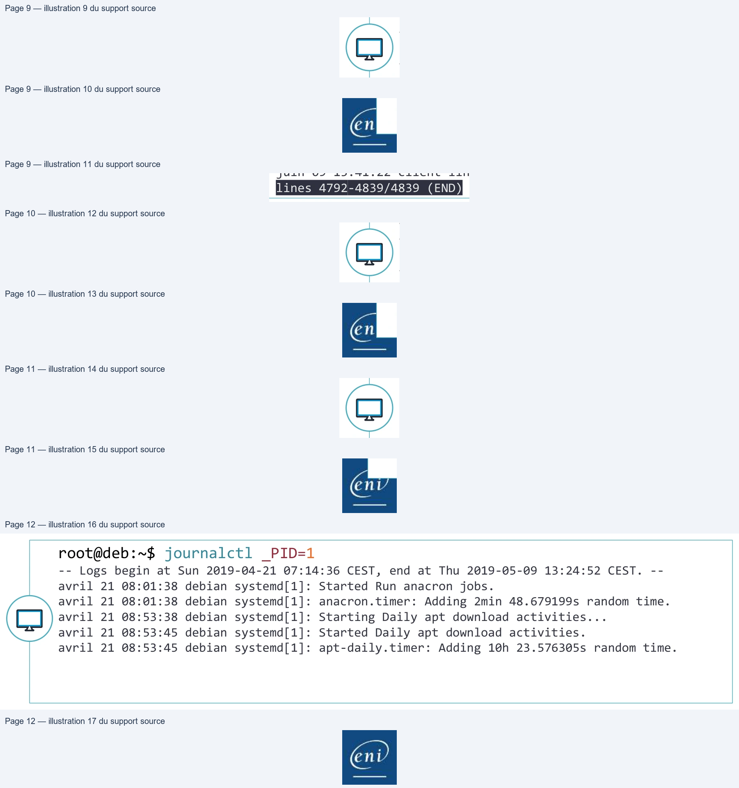
journalctl /usr/sbin/sshd
root@deb:~$ journalctl /usr/sbin/sshd -- Logs begin at Thu 2021-06-03 14:22:04 CEST, end at Wed 2021-06-09 16:32:19 CEST. -- juin 03 14:22:07 client-linux sshd[621]: Server listening on 0.0.0.0 port 22. juin 03 14:22:07 client-linux sshd[621]: Server listening on :: port 22. juin 09 15:35:20 client-linux sshd[5154]: Accepted password for jdoe from 172.19.11.13 port 61644 ssh2 juin 09 15:35:20 client-linux sshd[5154]: pam_unix(sshd:session): session opened for user jdoe by (uid=0)
eni
journalctl –p <level>
root@deb:~$ journalctl -p err -- Logs begin at Thu 2021-06-03 14:22:04 CEST, end at Wed 2021-06-09 16:32:19 CEST. -- juin 03 14:22:07 client-linux kernel: sd 3:0:0:0: [sdc] No Caching mode page found juin 03 14:22:07 client-linux kernel: sd 3:0:0:0: [sdc] Assuming drive cache: write through juin 09 15:35:20 client-linux gdm-password][18939]: pam_unix(gdm-password:auth): conversation failed juin 09 15:35:20 client-linux gdm-password][18939]: pam_unix(gdm-password:auth): auth could not identify password for [jdoe]
Les différents niveaux de priorités sont du plus critique au plus informatif : emerg, alert, crit, err, warning, notice, info, debug.
eni
root@deb:~$ journalctl -f /usr/sbin/sshd -p info -- Logs begin at Thu 2021-06-03 14:22:04 CEST, end at Wed 2021-06-09 16:32:19 CEST. -- mai 06 09:56:48 debian sshd[18901]: Accepted password for jdoe from 10.9.121.13
port 60042 ssh2 mai 06 09:56:48 debian sshd[18901]: pam_unix(sshd:session): session opened for user jdoe by (uid=0)
mai 06 15:48:06 debian sshd[18901]: pam_unix(sshd:session): session closed for user jdoe
D
eni
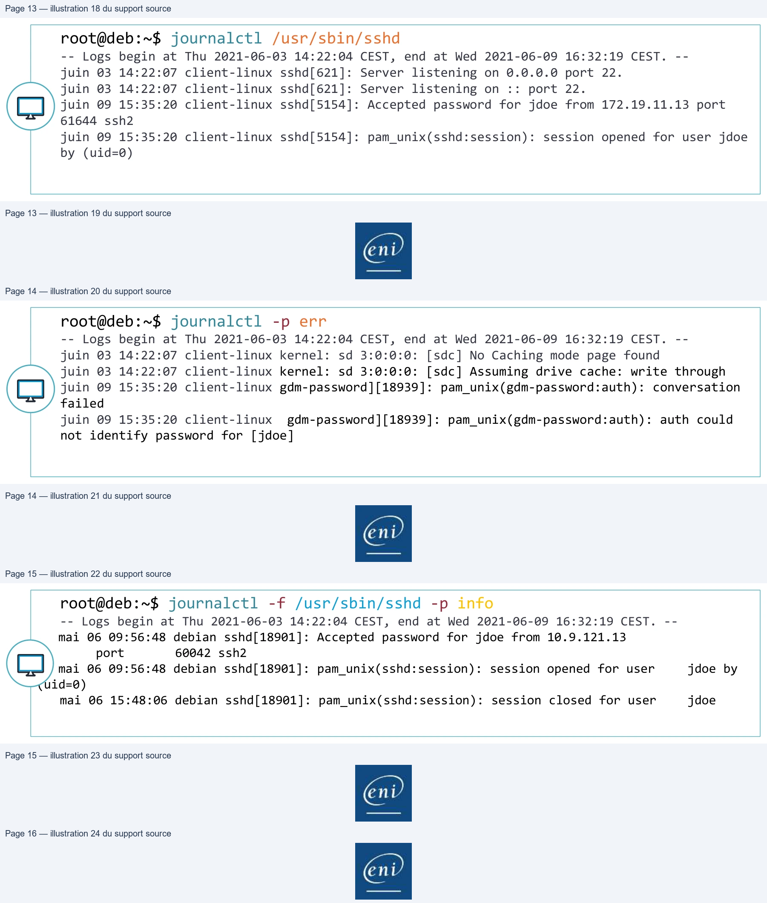
• Journald a certes l’avantage de stocker les logs dans une base de
données mais ces logs sont uniquement conservés pour le
démarrage en cours.
• Pour conserver les logs, Debian utilise rsyslog.
• Tous les logs de journalctl sont transférés à rsyslog.
• rsyslog travaille sur des « facilities » et des niveaux de priorités qui
déclenchent une action.
• Les facilities les plus courantes sont :
• auth : utilisée pour des évènements concernant la sécurité ou
l'authentification à travers des applications d'accès (type SSH)
• authpriv : utilisée pour les messages relatifs au contrôle d'accès
• daemon : utilisée par les différents processus systèmes et d'application
• kern : utilisée pour les messages concernant le noyau
• mail : utilisée pour les évènements des services mail
• user : facility par défaut quand aucune n'est spécifiée
• local0 à local7 : utilisées pour les messages de différents
programmes
• * : désigne toutes les facilities
• none : désigne aucune facility
Les différents niveaux de priorité sont :
• emerg : urgence, système inutilisable
• alert : alerte, intervention immédiate nécessaire
• crit : erreur système critique
• err : erreur de fonctionnement
• warning : avertissement
• notice : évènements normaux devant être signalés
• info : pour information
• debug : message de débogage
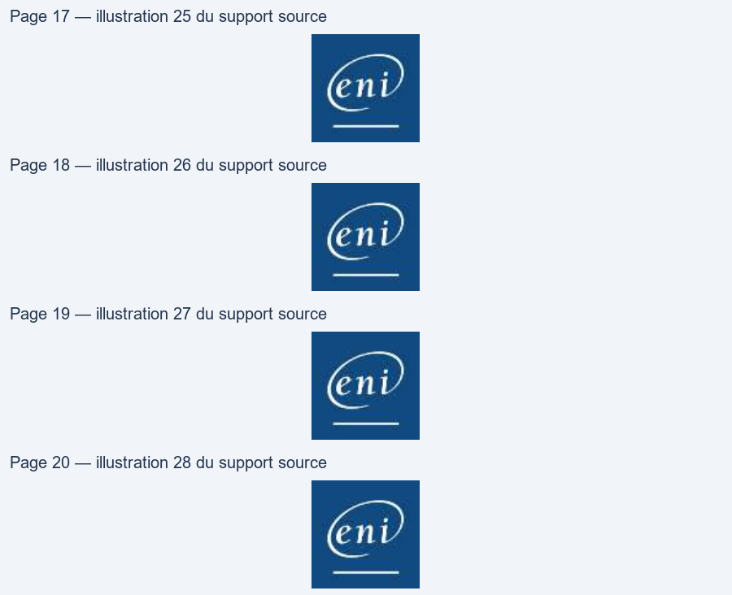
• Les actions correspondent généralement à l’écriture du journal
dans un fichier, mais il est possible de configurer rsyslog pour qu’il
envoie les messages à enregistrer vers un autre serveur rsyslog.
• Exemple de configuration des règles dans le fichier
/etc/rsyslog.conf :
auth,authpriv.* /var/log/auth.log *.*;auth,authpriv.none -/var/log/syslog #cron.* /var/log/cron.log daemon.* -/var/log/daemon.log kern.* -/var/log/kern.log
• Il est possible de faire des tests ou créer des scripts qui interagissent avec journald et rsyslog via la commande logger.
logger <option> [message]
root@deb:~$ logger -p cron.info Message de test
D)
eni
Rsyslog à travers Journald
TPDémo
Gestion de la journalisation|
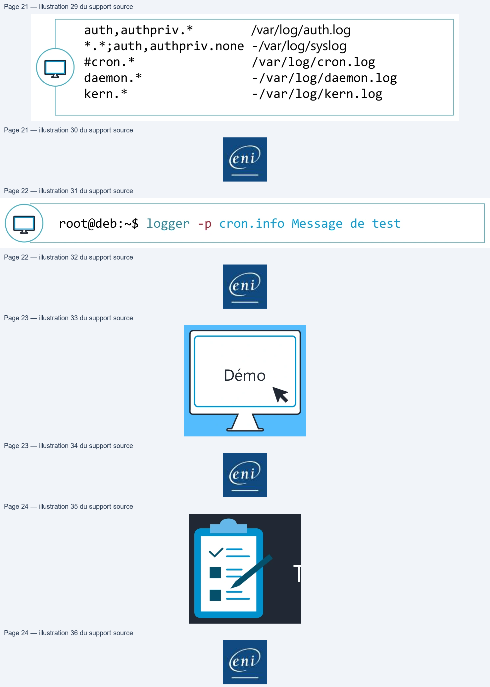
crontab –e
no crontab for root - using an empty one
Select an editor. To change later, run 'select-editor'. 1. /bin/nano <---- easiest 2. /usr/bin/vim.basic <---- the best 3. /usr/bin/vim.tiny Choose 1-3 [1]: 2
• Minute : de 0 à 59
• Heure : de 0 à 23
• Jour du mois : de 1 à 31
• Mois : de 1 à 12
• Jour de la semaine : de 0 à 7 (sachant que 0 et 7 représentent
dimanche)
• Commande : la commande à exécuter suivant la planification (il est
conseillé d’utiliser un script pour des raisons de simplification de
suivi des actions).
Il est possible de formater les cinq premières colonnes :
• Avec des listes, en utilisant le caractère « , » :
• Ex. : 1,3,5 dans la colonne des jours de la semaine génèrent une tâche tous les lundis,
mercredis et vendredis
• Avec des intervalles, en utilisant « - » :
• Ex. : 10-20 dans la colonne jours du mois génère une tâche exécutée du 10 au 20
• Avec un joker, en utilisant « * » :
• Ex. : * dans la colonne des heures indique toutes les heures
• Mettre un répétiteur, en utilisant « / » :
• Ex : */2 dans la colonne des mois génère une tâche exécutée en janvier, mars, mai,
juillet, septembre, novembre
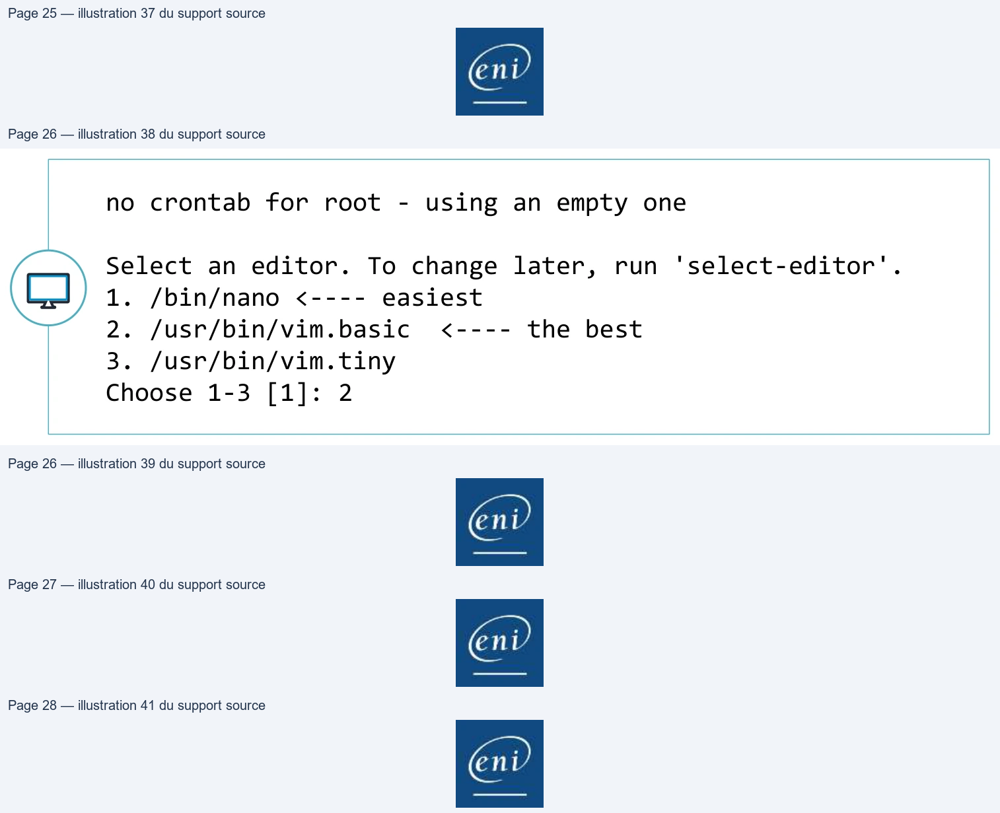
0 5 * * 1 /opt/bin/backup.sh
• Cron utilise aussi une table spéciale pour les tâches de planification du système. • Ces tâches sont déclarées dans le fichier /etc/crontab.
SHELL=/bin/sh PATH=/usr/local/sbin:/usr/local/bin:/sbin:/bin:/usr/sbin:/usr/bin # m h dom mon dow user command 17 * * * * root cd / && run-parts --report /etc/cron.hourly 25 6 * * * root test -x /usr/sbin/anacron || ( cd / && run-parts --report /etc/cron.daily ) 47 6 * * 7 root test -x /usr/sbin/anacron || ( cd / && run-parts --report /etc/cron.weekly) 52 6 1 * * root test -x /usr/sbin/anacron || ( cd / && run-parts --report /etc/cron.monthly)
8
• Pour comprendre le fonctionnement d’anacron, l’explication
suivante va s’appuyer sur le travail : cron.daily
• Tous les jours, si le système reste allumé 24h/24,
cron va exécuter cette tâche à 6h25 :
25 6 * * * root cd / && run-parts --report /etc/cron.daily
• Cette tâche a pour effet de lancer tous les scripts présents dans le répertoire /etc/cron.daily. • En regardant dans ce répertoire, on voit qu’il y a un fichier 0anacron. Ce script exécute une simple commande qui est :
anacron –u cron.daily
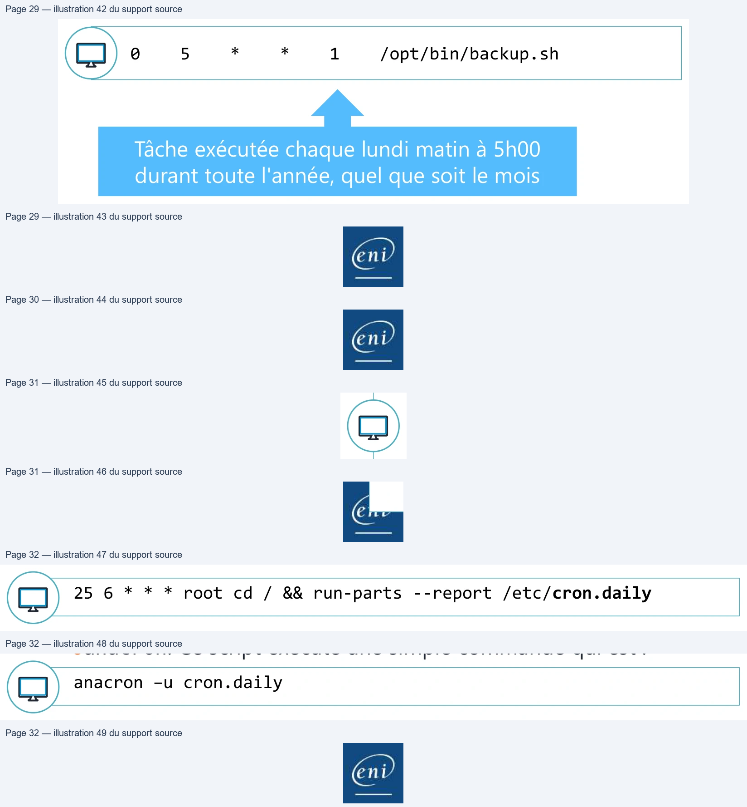
Planification des tâches
TPDémo
Gestion de la planification des
tâches|
• Nativement journald stocke ses logs dans une base de données
volatile dans /run/log/journal.
• Mais il est possible de demander à journald de garder les logs de
façon durable.
• Dans le fichier de configuration de journald
/etc/systemd/journald.conf, le paramètre #Storage=auto est
commenté, donc journald utilise sa valeur par défaut qui est auto.
• Le fait de créer un répertoire /var/log/journal rendra la
conservation des logs durable.
• La taille de la base de données peut vite devenir conséquente sur
un système fortement utilisé.
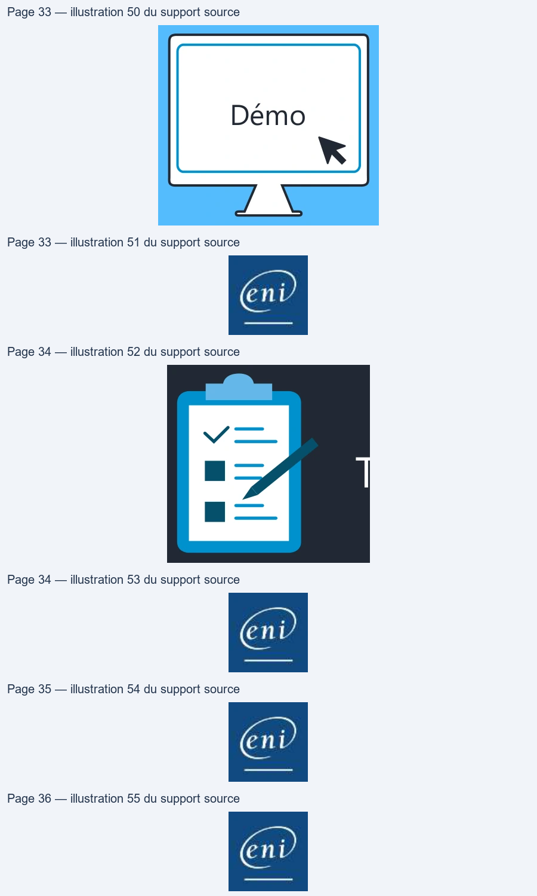
• Par défaut, journald utilisera un maximum de 10% du système de
fichier hébergeant /var/log/journald.
• Il est possible de définir la taille maximum utilisée sur le système
de fichier de la base de données avec le paramètre
SystemMaxUse=. De plus, il est possible de dire que la base de
données sera subdivisée en plusieurs fichiers de taille fixe avec le
paramètre SystemMaxFileSize=.
• Bien évidement si la décision est prise de garder les logs de
journald de façon définitive, il sera peut-être intéressant de
stopper rsyslog afin d’éviter les doublons d’information.
root@deb:~$ systemctl disable rsyslog
ent
• Logrotate est un programme exécuté par une tâche cron système
tous les jours (et bien sûr géré aussi par anacron) présente dans
/etc/cron.daily/logrotate.
• Le fichier de configuration principal /etc/logrotate.conf définit des
valeurs de comportement par défaut.
/var/log/squid/access.log {
daily
compress
delaycompress
rotate 366
create 640
}
—
root@deb:~$ cat /etc/debian_version 10.9
root@deb:~$ uname -a Linux deb 5.2.0-8-amd64 #1 SMP Debian 5.2.0-8.1 (2021-05-19) x86_64 GNU/Linux
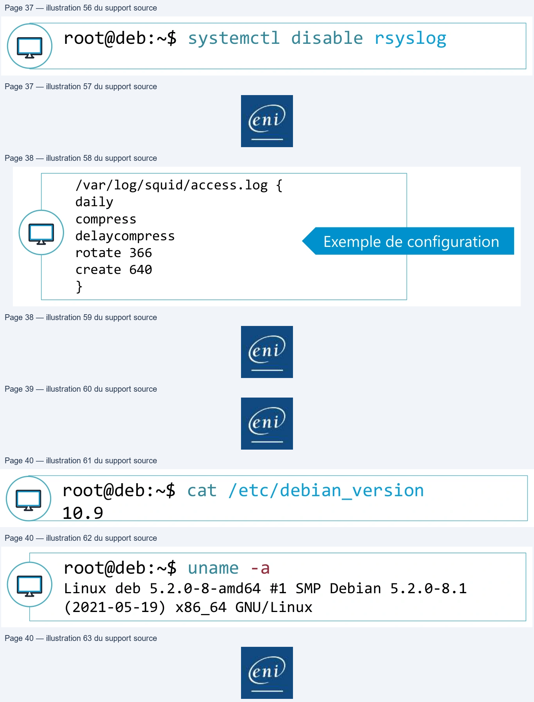
root@deb:~$ lscpu Architecture : x86_64 Mode(s) opératoire(s) des processeurs : 32-bit, 64-bit Boutisme : Little Endian Processeur(s) : 1 Liste de processeur(s) en ligne : 0 Thread(s) par cœur : 1 Cœur(s) par socket : 1 […] Famille de processeur : 6 Modèle : 42 Nom de modèle : Intel(R) Core(TM) i5-2500 CPU @ 3.30GHz […]
eni
root@deb:~$ lspci 00:00.0 Host bridge: Intel Corporation 440BX/ZX - 82443 Host bridge (rev 01) 00:01.0 PCI bridge: Intel Corporation 440BX/ZX – 82443 AGP bridge (rev 01) 00:07.0 ISA bridge: Intel Corporation 82371AB/EB/MB PIIX4 ISA (rev 08) 00:07.1 IDE interface: Intel Corporation 82371AB/EB/MB PIIX4 IDE (rev 01) 00:07.3 Bridge: Intel Corporation 82371AB/EB/MB PIIX4 ACPI (rev 08) 00:07.7 System peripheral: VMware Virtual Machine Communication Int. (rev 10) 00:0f.0 VGA compatible controller: VMware SVGA II Adapter 00:10.0 SCSI storage controller: LSI Logic / Symbios Logic 53c1030 PCI-X Fusion-MPT Dual Ultra320 SCSI (rev 01) 00:11.0 PCI bridge: VMware PCI bridge (rev 02) 00:15.0 PCI bridge: VMware PCI Express Root Port (rev 01) 00:15.1 PCI bridge: VMware PCI Express Root Port (rev 01)
root@deb:~$ lsusb Bus 002 Device 001: ID 1d6b:0002 Linux Foundation 2.0 root hub Bus 001 Device 003: ID 0e0f:0002 VMware, Inc. Virtual USB Hub Bus 001 Device 002: ID 0e0f:0003 VMware, Inc. Virtual Mouse Bus 001 Device 001: ID 1d6b:0001 Linux Foundation 1.1 root hub
fdisk ; pvs,vgs,lvs ; lsblk,blkid,findmnt,df
• La commande du permet de prendre des informations sur la taille utile d’un répertoire.
root@deb:~$ du –sh /root 76K /root
• La commande ls permet de prendre des informations sur les fichiers.
root@deb:~$ ls –lh fichier -rw-r----- 1 jdoe informatique 79,4k 10:24 fichier
• La commande file permet de connaître la nature d’un fichier.
root@deb:~$ file /vin/bash /bin/bash: ELF 64-bit LSB pie executable, x86-64, version 1 (SYSV), dynamically linked, interpreter /lib64/ld-linux-x86-64.so.2, for GNU/Linux 3.2.0, BuildID[sha1]=ffe165dc8164aea2b05beda07aeda8ad71f1e7c, stripped
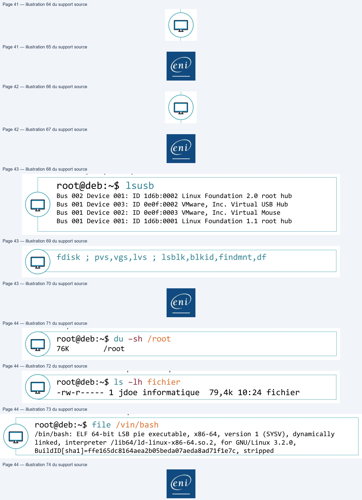
La commande lsof permet de connaître l’activité des fichiers ouverts dans un répertoire donné.
root@deb:~$ lsof /root lsof: WARNING: can't stat() fuse.gvfsd-fuse file system /run/user/1000/gvfs Output information may be incomplete. COMMAND PID USER FD TYPE DEVICE SIZE/OFF NODE NAME bash 2074 root cwd DIR 254,0 4096 781836 /root bash 2179 root cwd DIR 254,0 4096 781836 /root lsof 3826 root cwd DIR 254,0 4096 781836 /root lsof 3827 root cwd DIR 254,0 4096 781836 /root
Be
ene
Informations en temps réel avec top
top - 10:52:12 up 11:27, 3 users, load average: 0,00, 0,00, 0,00 Tasks: 193 total, 2 running, 191 sleeping, 0 stopped, 0 zombie %Cpu(s): 1,0 us, 0,3 sy, 0,0 ni, 98,7 id, 0,0 wa, 0,0 hi, 0,0 si, 0,0 st MiB Mem : 1970,9 total, 406,0 free, 848,2 used, 716,7 buff/cache MiB Swap: 976,0 total, 976,0 free, 0,0 used. 938,3 avail Mem
PID USER PR NI VIRT RES SHR S %CPU %MEM TIME+ COMMAND
5 root 20 0 0 0 0 I 0,3 0,0 0:41.44 kworker/0:0-
mm_percpu_wq
550 root 20 0 122940 12316 10708 S 0,3 0,6 0:45.42 vmtoolsd
2257 jdoe 20 0 2582664 295840 106080 S 0,3 14,7 11:46.09 gnome-shell
6155 jdoe 20 0 16972 5968 4844 S 0,3 0,3 0:00.04 sshd
6296 jdoe 20 0 11272 3728 3008 R 0,3 0,2 0:00.04 top
1 root 20 0 104324 10568 7852 S 0,0 0,5 0:03.68 systemd
2 root 20 0 0 0 0 S 0,0 0,0 0:00.00 kthreadd
3 root 0 -20 0 0 0 I 0,0 0,0 0:00.00 rcu_gp
Se
Informations en temps réel avec htop (à installer)
CPUT ||
2.7%]
Tasks:
103, 205 thr;
1 running
MemE {I} LITT ILILLEEL ET LI {| )682M/1.946]
Load average: 0.77 0.25 0.08
Swp[
O0K/2.00G]
Uptime:
18:53:43
3472 penthium
20
06 24548
3644
3008 R
0.7
0.2
0:00.05 htop
769 penthium
20
@
330M 49536 29780 S
0.7
2.4
0:01.99 /usr/lib/xorg/Xorg vt
1 root
20
©
136M
7236
5340S
0.0
0.4
0:03.69 /sbin/init
230 root
20
6 59640
6408
5680 S
0.0
0.3
0:01.57 /lib/systemd/systemd-
261 root
20
©
104M
1600
1340 S
0.0
6.1
0:00.00 /sbin/lvmetad
-f
264 root
20
© 46184
3668
2764S
0.0
0.2
0:00.39 /lLib/systemd/systemd-
452 systemd-t
20
0
126M
4280
3768 S
0.0
0.2
0:00.09 /lib/systemd/systemd-
438 systemd-t
20
0
126M
4280
3768 S
0.0
0.2
6:00.63 /lib/systemd/systemd-
462 root
20
6
244M
3064
2480 S
0.0
0.2
0:00.08 /usr/sbin/rsyslogd
-n
463 root
20
@
244M
3064
2480 S
0.0
0.2
0:00.00 /usr/sbin/rsyslogd
-n
464 root
20
6
244M
3064
2480S
0.0
0.2
0:00.16 /usr/sbin/rsyslogd
-n
447 root
20
©
244M
3064
2480 S
0.0
0.2
0:00.28 /usr/sbin/rsyslogd
-n
465 root
20
6
412M
8896
7400 S
0.0
0.4
0:00.00 /usr/sbin/ModemManage
471 root
20
0
412M
8896
7400 S
0.0
0.4
0:00.00 /usr/sbin/ModemManage
448 root
20
©
412M
8896
7400S
0.0
0.4
0:00.04 /usr/sbin/ModemManage
i
450 avahi
20
6 47144
2984
2632 S
0.0
0.1
0:06.66 avahi-daemon:
running
env
472 rtkit
20
©
181M
2928
2624S
0.0
0.1
0:00.96 /usr/lLib/rtkit/rtkit-
=
473 rtkit
RT
1
181M
2928
2624S
06.0
0.1
6:00.16 /usr/lib/rtkit/rtkit-
451 rtkit
21
1
181M
2928
2624S
0.0
0.1
0:01.14 /usr/lib/rtkit/rtkit-
FF 2 SF 3 SF 4RS 5 RF 6 RE + 7 RSS F © I
© RR
1 © RSR
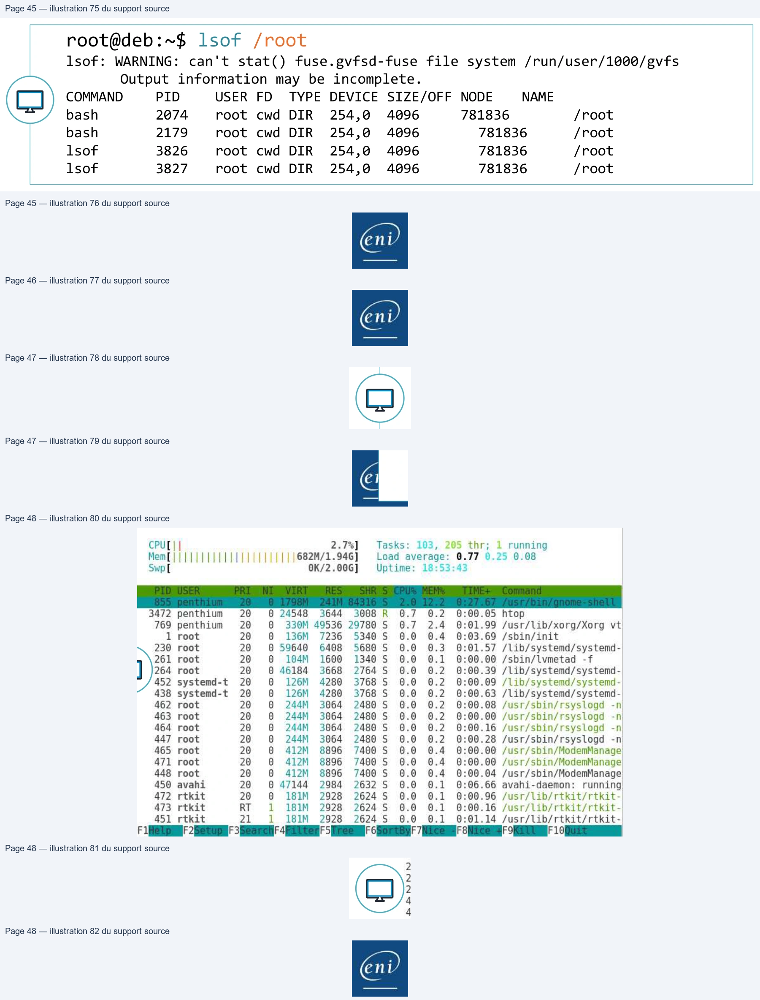
Informations en temps réel avec glances (à installer)
XPS13-9333
(Ubur
1
4 64bit
L
x
4.4.0-13
i
IP 192.1
).48/24 Pub
169.86
.2
Upt ime
1:02:4
1
H
cpu
7
e
tx
MEM
t
1G
SWAP
LOAD
t-co
F
I
1
e
sn
€
e
tota
4
€
MEM
1
2.0%
i
CES
i
i:
GRE
bof!
626
4
4.524
NETWORK
CONTAINERS
ed
t
ker
17.05.8-ce
TASKS
254
(813
t
5
ot
ted
autonat
y
by
CP
t
WIFI
cpus
Men
IAT
RE
PI
f
TIME+
THR
NI
sw
¢
DISK
1/0
Û
“
M
136M
Large
)
ate
3
t
FILE SYS
Tot
1.9
43"
‘
c
‘
fire
tentr
pa
FOLDERS
|
(]
19
4
F
pticat
SENSORS
M
M
4581
Large
18
3
in
/terainnt
End
to!
PRES
Reise
oe
perlite
2
1
T
No warning or
critical
alert
detected
• Lister des processus avec ps
root@deb:~$ ps -ef […] jdoe 6155 6149 0 08:55 ? 00:00:00 sshd: jdoe@pts/2 jdoe 6156 6155 0 08:55 pts/2 00:00:00 -bash root 6301 2 0 10:56 ? 00:00:00 [kworker/0:1-ata_sff] root 6302 2 0 11:02 ? 00:00:00 [kworker/0:2-ata_sff] jdoe 6309 6156 0 11:05 pts/2 00:00:00 ps -ef
• Informations sur la ram avec free
root@deb:~$ free -h total used free shared buff/cache available Mem: 1,9Gi 802Mi 451Mi 23Mi 716Mi 983Mi Swap: 975Mi 0B 975Mi2
Performances et processus
TPDémo
Informations sur le système|
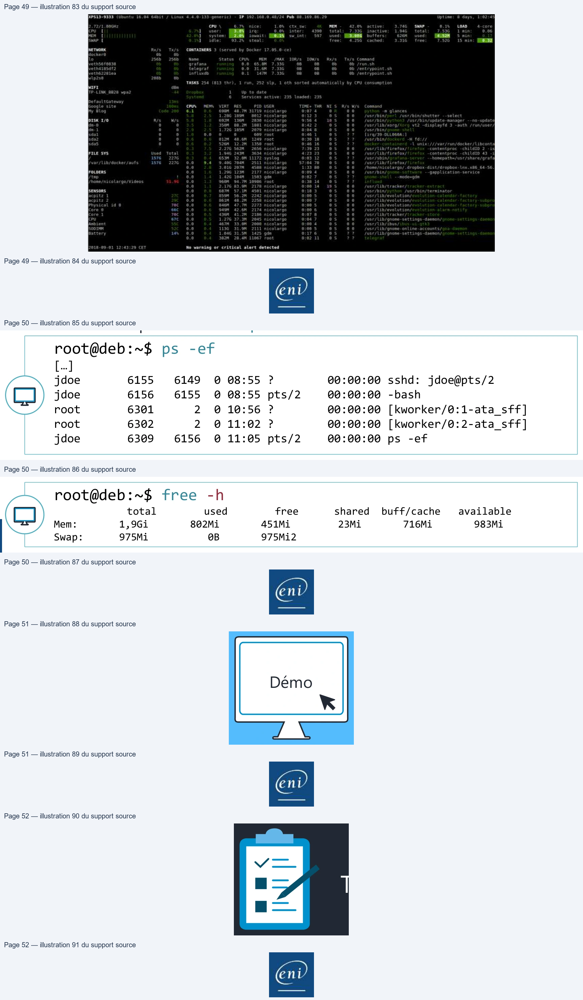